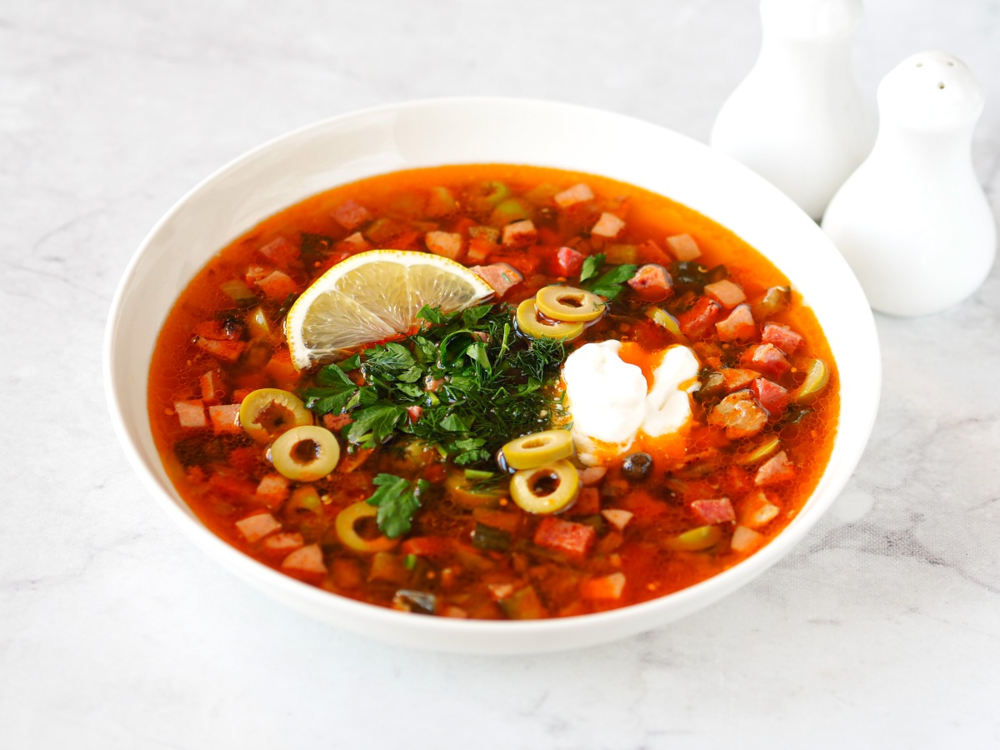

Ваши сохраненные блюда
Избранное помогает планировать меню на неделю, собирать рецепты для праздничного стола или просто хранить кулинарные идеи, которые однажды вас вдохновили. Вы можете добавлять сюда неограниченное количество рецептов и удалять их, когда они перестают быть актуальными.
Солянка с капустой и грибами

Солянка с капустой и грибами
Сытное тушёное блюдо из белокочанной капусты с грибами, морковью и луком. Овощи готовятся в собственном соку, поэтому блюдо получается особенно ароматным и насыщенным. Такую солянку можно подавать как самостоятельное блюдо или в качестве гарнира к картофелю и крупам.
Калорийность: 70 ккал на 100 г.
Тыквенный суп-пюре

Ароматный, нежный и бархатистый суп из тыквы со сливками. Тыква запекается до мягкости, затем пробивается блендером вместе с обжаренным луком, морковью и чесноком. Сливки добавляются в конце, чтобы сохранить нежную текстуру. Популярное блюдо осени 2026. Всем попробовать!!!
Калорийность: 108 ккал на 100 г.
Салат из свежей капусты с огурцом

Лёгкий летний салат из хрустящей белокочанной капусты, свежего огурца и зелени. Капуста тонко шинкуется, слегка разминается с солью, чтобы дать сок, затем смешивается с нарезанным огурцом, укропом и петрушкой. Заправляется растительным маслом. Салат готовится за пять минут и отлично подходит как гарнир к мясу.
Калорийность: 45 ккал на 100 г.